Your browser doesn't support the features required by impress.js, so you are presented with a simplified version of this presentation.
For the best experience please use the latest Chrome, Safari or Firefox browser.
Jak nie budować gry przy okazji ważnego wydarzenia
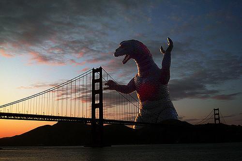
$ whoami
-
<3 javascript
-
https://github.com/siemiatj
-
https://saskla.cz
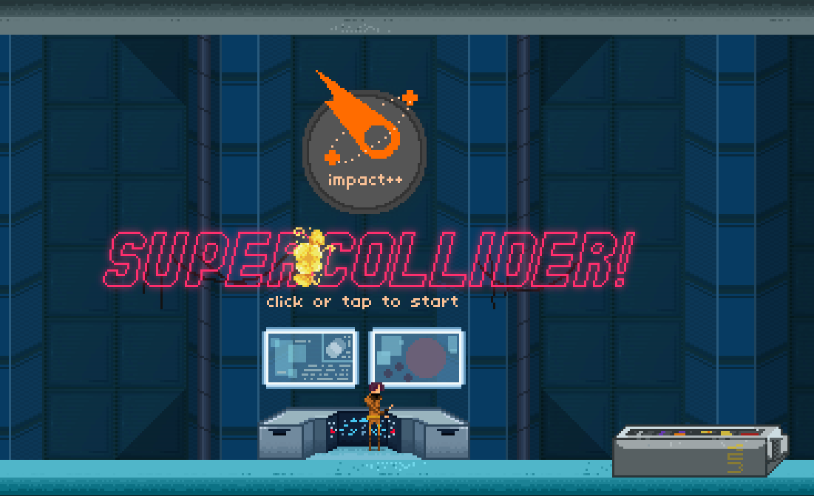
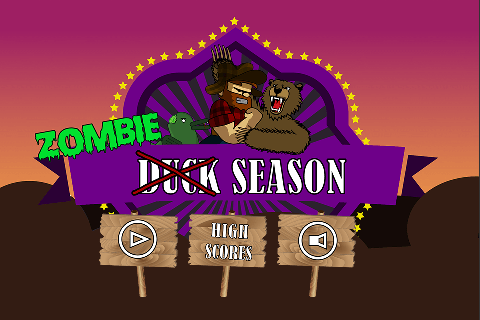
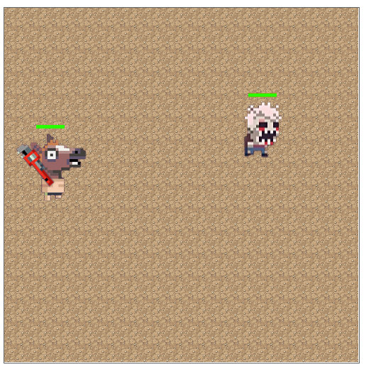
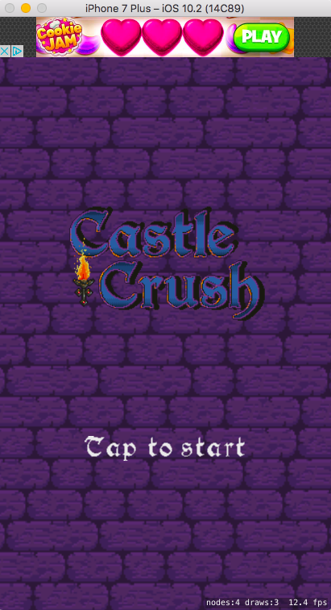
Toruń Getaway
Ale po co i dlaczego ?

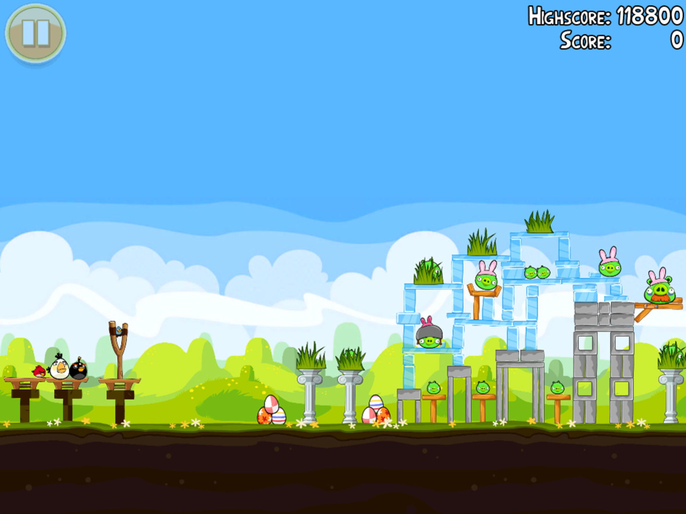
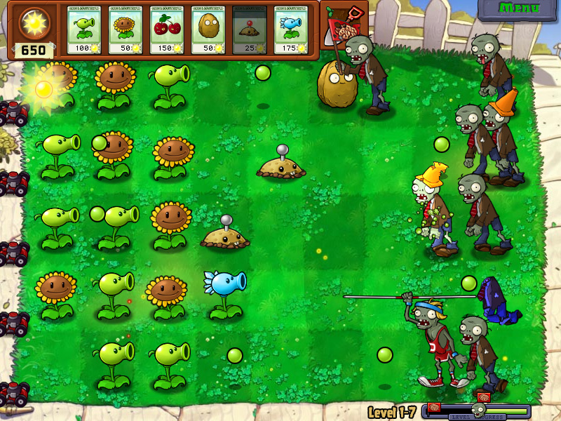
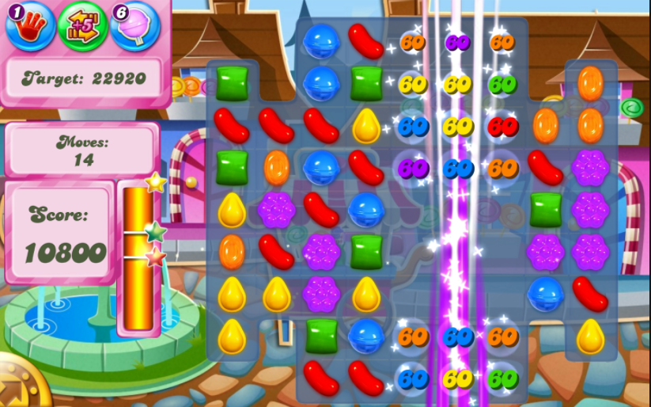
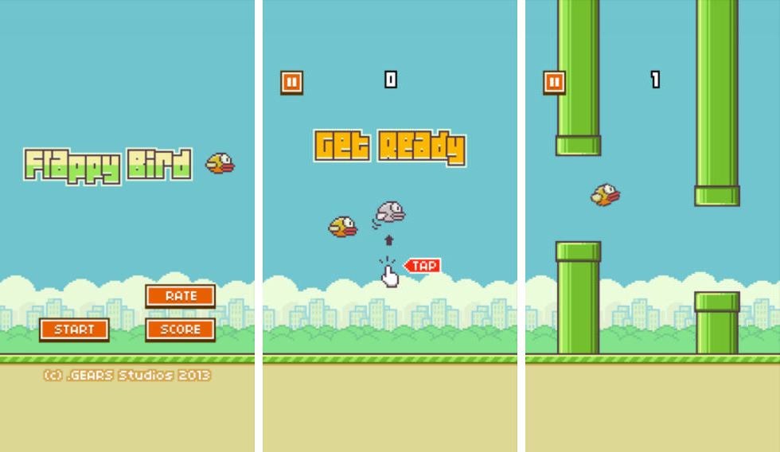
KISS, DRY, OSS, ABS, PKO
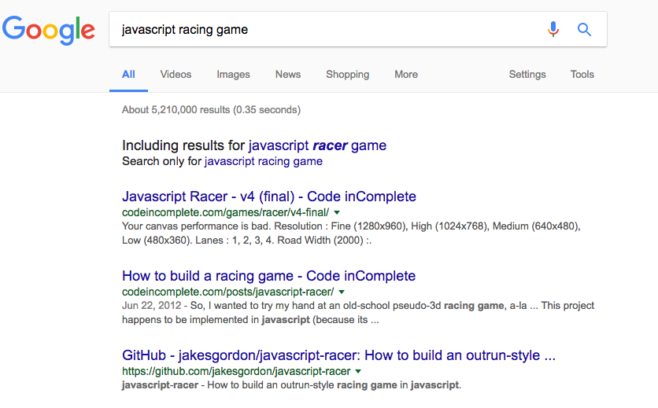
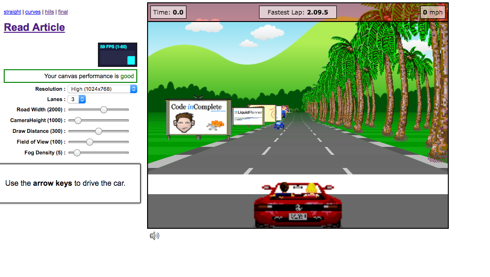
https://github.com/jakesgordon/javascript-racer
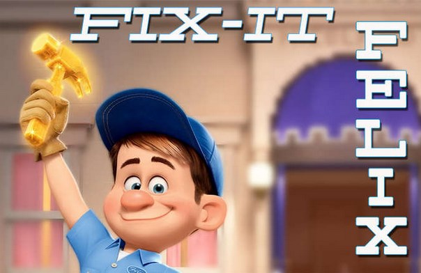
-
ES6 modules
-
babel, webpack, global variables
-
https://github.com/selaux/node-sprite-generator
Seicento of Destruction
Pierwszy asset
Pierwszy asset ver 2
Learn to pixels...
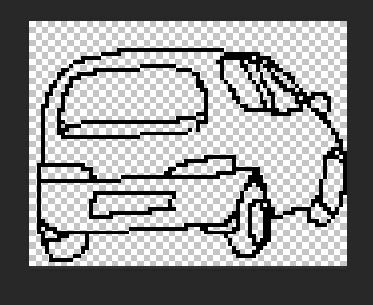
NOT
-
http://opengameart.org/
-
https://www.gamedevmarket.net/
-
https://www.patreon.com/
-
http://blackmoondev.com/
-
DevianArt, http://pixeljoint.com/, fora itp
Learn to Facebook
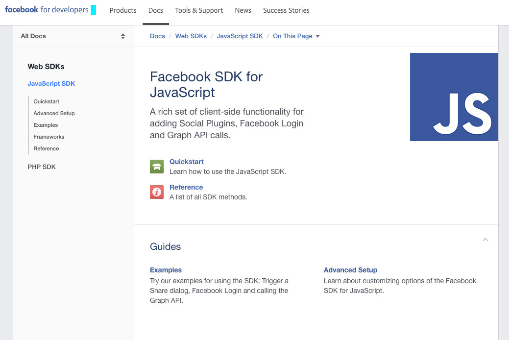
https://developers.facebook.com/docs/javascript
Skip the mobile or desktop
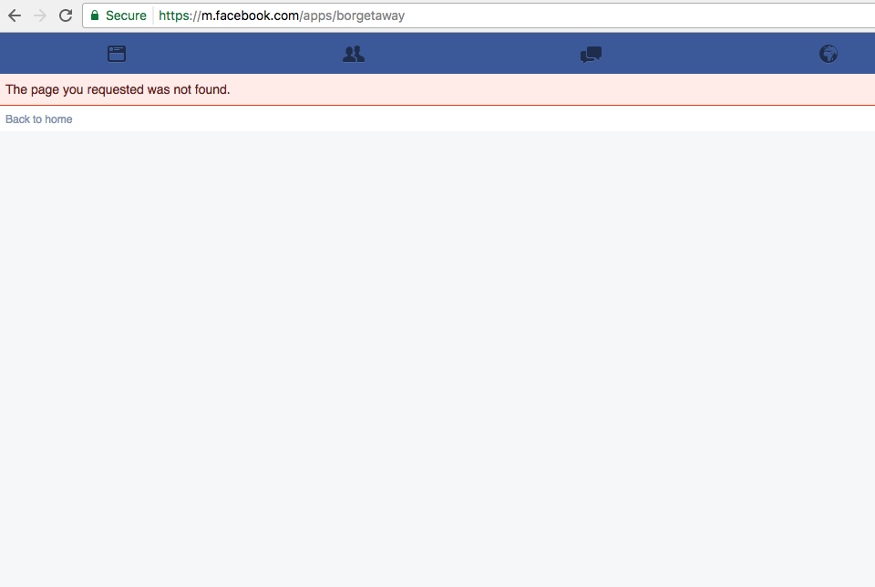
CAN we _add() lepiej ?
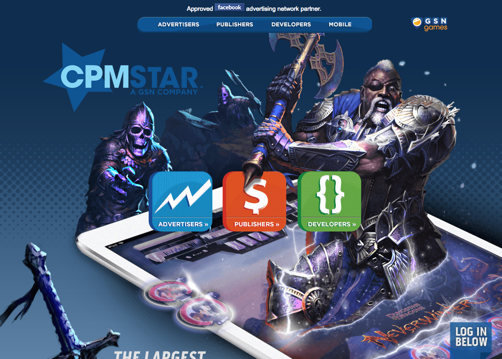
Arigato ! спасибо !1one
-
http://aszdziennik.pl/119277,macierewicz-ocalil-80-osob-w-aucie-byla-bomba-z-zapalnikiem-ustawionym-na-predkosc-ponizej-150-km-h
-
https://collinhover.github.io/impactplusplus/demo/
-
https://github.com/siemiatj/gamedevjs-pres
-
https://apps.facebook.com/borgetaway/